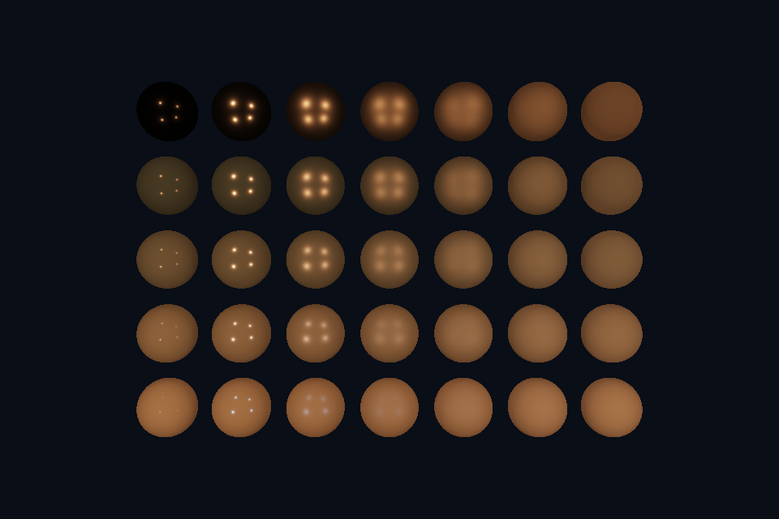

vk09_pbr · 直接光 PBR
路线首页 · 上一课 · 下一课
构建和运行
从仓库根目录执行，完成配置后后续只需 build：
cmake --preset vulkan-native
cmake --build --preset vulkan-native-debug --target vk09_pbr --parallel 4
.\Vulkan\native\build\bin\Debug\vk09_pbr.exe
也可以通过根目录“开始学习.cmd”打开页面后点击“运行本课”。01/08 是控制台计算/设备检查示例，点击后可用“查看运行输出”阅读结果。其余示例 Esc 退出，拖动窗口可测试尺寸重建。
预期结果：5×7 球阵：横向粗糙度，纵向金属度。
先读哪些代码
shared sphere/draws → scene.frag pbr → push constants 每球参数。
本目录 main.cpp 选择本课的执行路径。完整 API 实现在 common/native_app.hpp 与 ../common/scene_vk.hpp（相对路线根目录），数学和网格在仓库 shared/scene.hpp。每课都是独立程序；共享代码避免把相同资源生命周期错误复制十遍，也会为后续课预先初始化部分公共状态。首次阅读只沿本课列出的调用路径展开。
原理和实现
复用 OpenGL 的微表面思路，采用 GGX D、Schlick 几何近似和 Fresnel，漫反射乘 (1-F)*(1-metallic)。四盏点光按距离平方衰减。roughness 保留最小值，避免除零与过尖分布。这里是直接光 PBR，加了少量环境常量；它没有移植 OpenGL 第 25 课的完整 IBL、模型加载或所有材质扩展。最后在 UNORM 目标输出前做 tone mapping 和简化 Gamma。
修改练习
改变基础颜色与灯光；将 metallic 固定 0/1 对比；尝试把 OpenGL IBL 预计算移植到 Vulkan。
修改 shader 后重新构建，再运行。Vulkan GLSL 会被编译并复制到 exe 旁的 shaders；DX12 的 HLSL 副本也随构建更新，运行时再编译。应修改源目录而不是运行副本。
自测
为什么高金属度球在没有环境光照的侧面很黑？
参考：金属没有该模型中的漫反射，未被直接光覆盖的反射方向需要真实环境照明来提供能量。
验证和调试
运行 vk09_pbr.exe --smoke 执行四帧（或设备/计算检查）并退出；颜色课会从 GPU 读回 PPM，计算课验证 256 个数。参见仓库 调试指南。这些基础例子按帧串行等待，重点是可追踪的生命周期；多帧重叠不能仅删除 wait，需要同时改成帧资源环。
实测画面
固定时间的 GPU 读回图像（nvpro 为 headless Viewport 输出）。

深入学习：数据、接口与执行
球阵列共用同一网格和 pipeline，每个 Draw 改 metal/roughness。先在 GLSL 输出法线/NoL 隔离输入，再看 D/G/F。当前只有直接光，不含完整环境 IBL。
配套精讲：三 API 对照 · 直接光 PBR 与 IBL。先读概念与参数选择，再返回本课实现核对，不必一次展开所有公共类。
本课的真实源码切片
来自 Vulkan/common/shaders/scene.frag，第 17—42 行；这是现有实现的局部摘录，末尾可能处于函数中间，不是可单独编译的完整程序。
vec3 pbr(vec3 N, vec3 V, vec3 P, float metal, float r) {
vec3 albedo = vec3(.8, .25, .07), sum = vec3(.02) * albedo * (1.0 - metal),
f0 = mix(vec3(.04), albedo, metal);
for (int i = 0; i < 4; ++i) {
vec3 lp = vec3(i % 2 == 0 ? -6 : 6, i < 2 ? 6 : -4, 8);
vec3 delta = lp - P, L = normalize(delta), H = normalize(V + L);
float NoV = max(dot(N, V), .001), NoL = max(dot(N, L), 0), NoH = max(dot(N, H), 0);
float a = r * r, a2 = a * a, d = NoH * NoH * (a2 - 1) + 1,
D = a2 / max(PI * d * d, .000001);
float k = (r + 1) * (r + 1) / 8;
float G = NoV / (NoV * (1 - k) + k) * NoL / (NoL * (1 - k) + k);
vec3 F = f0 + (1 - f0) * pow(1 - max(dot(V, H), 0), 5);
sum += ((1 - F) * (1 - metal) * albedo / PI + D * G * F / max(4 * NoV * NoL, .001)) * 90 /
dot(delta, delta) * NoL;
}
return sum;
}
void main() {
int mode = int(draw.settings.x);
vec3 N = normalize(normal), c;
if (mode <= 4)
c = clamp(normal, 0, 1);
else if (mode >= 9)
c = pbr(
N, normalize(vec3(0, 0, 14) - worldPos), worldPos, draw.settings.y, draw.settings.z);
同主题跨 API 导航
以下是同主题参考；场景、功能完成度和版本基线可能不同，具体边界见对照章节。
先预测，再验证
与 OpenGL IBL 球图不同可否直接认定 Vulkan 错了？
参考推导：不可以；先统一场景、光源、相机、环境项和显示编码。比较前先定义一致输入。
在一次实验中只改一个因素，记录预测、实际画面/日志和原因。检查已有 smoke 是否仍通过；图形调试器里再核对本次 draw 的实际输入/输出，不能仅凭进程正常退出下结论。